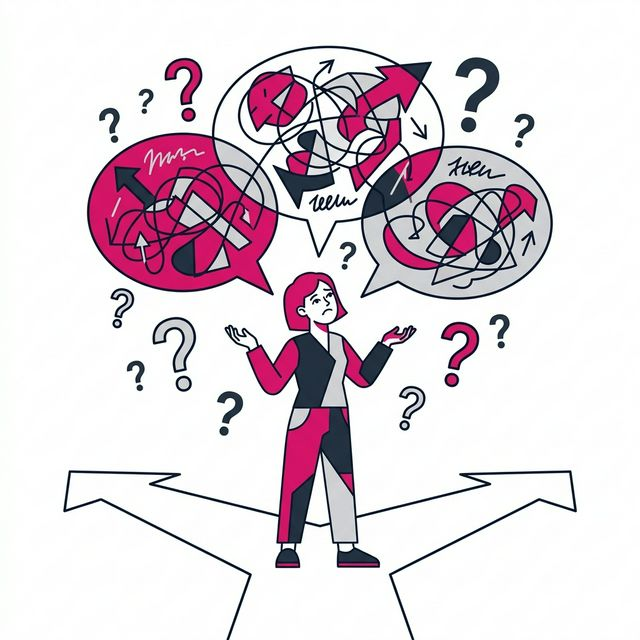
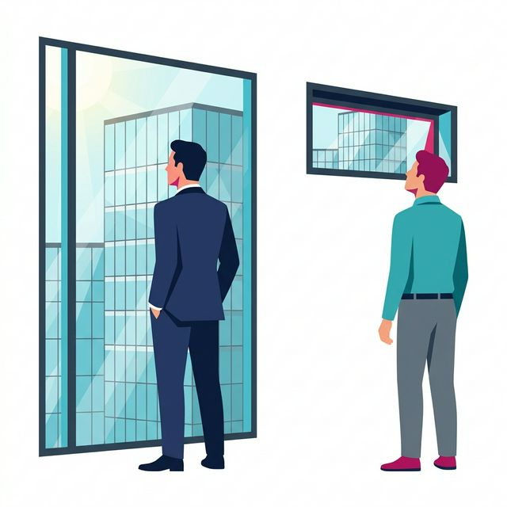

Make culture thrive by fostering communication, camaraderie, and trust at all levels of the organization.
Organizations need to work on culture and connection
Connection is the foundation of workplace culture and one of the strongest reasons people stay
of employees say they remain with an organization primarily because of culture and the people they work with
say they feel a sense of belonging at their organization
However, many organizations continue to face challenges
On the surface, things look good, but connection across the organization is also uneven
Cultural strain rarely shows up as a single issue. It accumulates through everyday experiences.
When determining the biggest culture and connection obstacles, employees most often point to:

When leadership connection is visible, trust grows. When it is not, even well-intentioned culture efforts lose credibility.
There is a disconnect in perception of top leadership involvement. Executives are much more likely than managers to believe the C-suite is involved in improving the work environment to a high or very high degree:

Compared to culture laggard organizations, culture leader organizations are:
And most aren't using the following to help build relationships, including:
Recognition is one of the most direct ways employees experience connection, yet it's inconsistent across many organizations.
Compared to employees in culture laggard organizations, those in culture leader organizations are:
Connection is not just a nice-to-have. It is how culture produces trust, engagement, and results. Organizations that track connection, recognize it when it happens, and show visible leadership consistently perform better than those that don't. When you treat connection like a system rather than a feeling, culture becomes something you can build on, not something you just hope holds together.